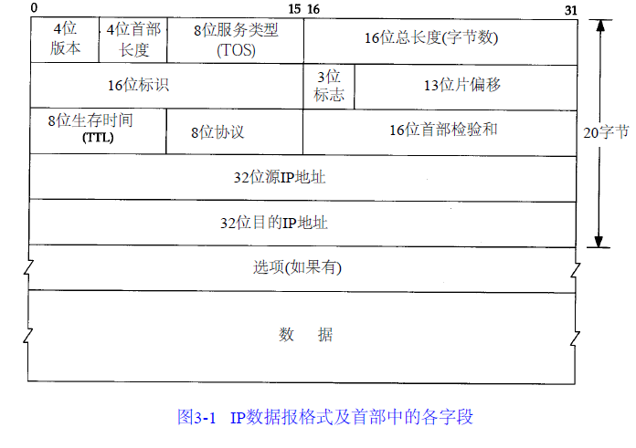
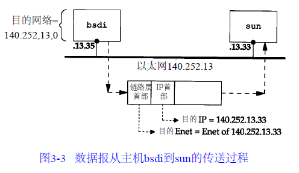
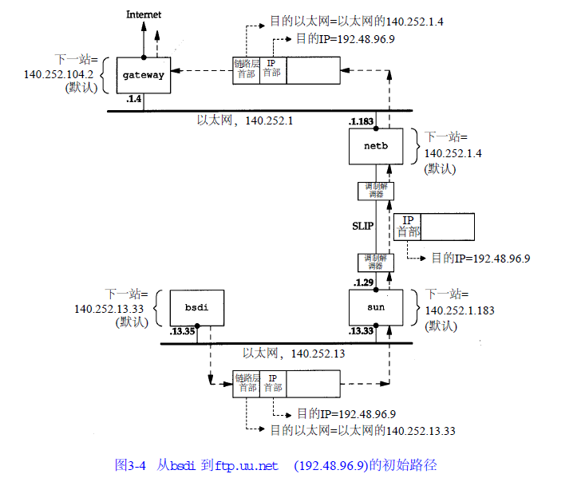
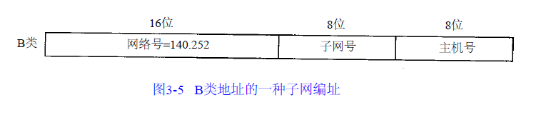
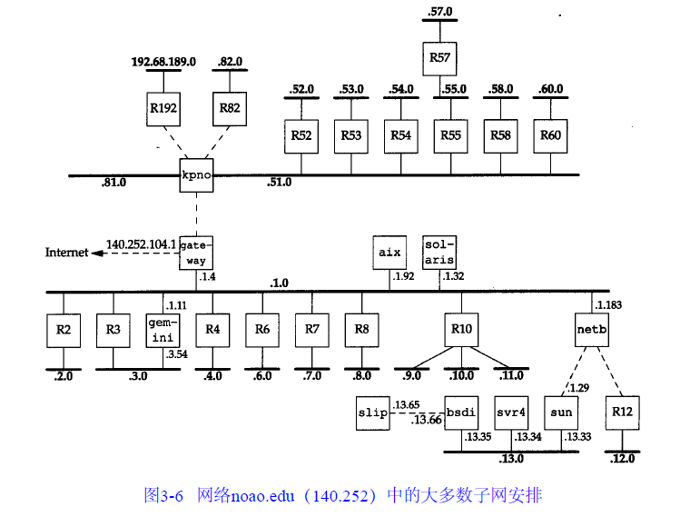
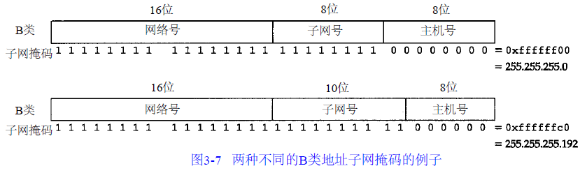
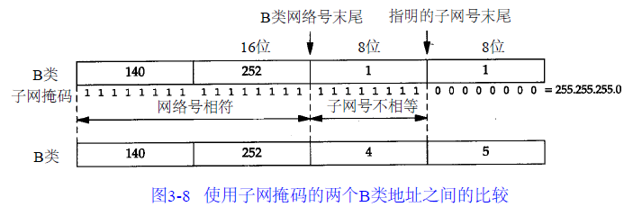
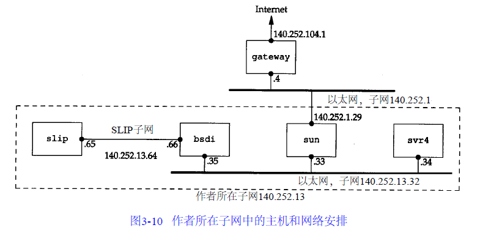
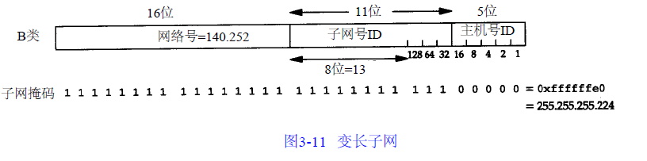

IP网际协议
Table of Contents
在本章，将要简要介绍IP首部中的各个字段，讨论IP路由选择和子网的有关内容。还要介绍两个有用的命令：ifconfig和netstat。关于IP首部中一些字段的细节，将留在以后使用这些字段的时候再进行讨论
IP协议
IP是TCP/IP协议族中最为核心的协议。所有的TCP、UDP、ICMP及IGMP数据都以IP数据报格式传输：
- 不可靠(unreliable)：它不能保证IP数据报能成功地到达目的地。IP仅提供最好的传输服务。如果发生某种错误时，比如某个路由器暂时用完了缓冲区， IP有一个简单的错误处理算法：丢弃该数据报，然后发送ICMP消息报给信源端。任何要求的可靠性必须由上层来提供（如TCP）
- 无连接(connection less)：IP并不维护任何关于后续数据报的状态信息。每个数据报的处理是相互独立的。这也说明，IP数据报可以不按发送顺序接收。如果一信源向相同的信宿发送两个连续的数据报（先是A，然后是B），每个数据报都是独立地进行路由选择，可能选择不同的路线，因此B可能在A到达之前先到达
IP首部
普通的IP首部长为20个字节（除非含有选项字段），IP数据报文的格式如图3-1所示：

网络字节序
最高位在左边，记为0bit，最低位在右边，记为31bit。4个字节的32bit值以下面的次序传输：首先是0～7bit，其次8～15bit，然后16～23bit，最后是24~31bit。这种传输次序称作big endian字节序。由于TCP/IP首部中所有的二进制整数在网络中传输时都要求以这种次序，因此它又称作网络字节序。以其他形式存储二进制整数的机器，如little endian格式，则必须在传输数据之前把首部转换成网络字节序
协议版本号
目前的协议版本号是4，因此IP协议有时也称作IPv4协议
首部长度
首部长度指的是首部占32bit(4字节)的数目，包括任何选项。由于它是一个4比特字段，因此首部最长为60个字节(15X4=60)。普通IP数据报（没有任何选择项）字段的值是5(5X4=20个字节)
TOS
服务类型（TOS）字段：
- 一个3bit的优先权子字段（现在已被忽略）
- 4bit的TOS子字段，4bit中只能置其中1bit。如果所有4bit均为0，那么就意味着是一般服务：
- 最小时延
- 最大吞吐量
- 最高可靠性
- 最小费用
- 1bit未用位但必须置0
下表列出了对不同应用建议的TOS值。在最后一列中给出的是十六进制值，因为这就是在后面将要看到的tcpdump命令输出：
| 应用程序 | 最小时延 | 最大吞吐量 | 最高可靠性 | 最小费用 | 16机制值 |
| Telnet/Rlogin | 1 | 0 | 0 | 0 | 0x10 |
| FTP控制 | 1 | 0 | 0 | 0 | 0x10 |
| FTP数据 | 0 | 1 | 0 | 0 | 0x08 |
| 任意数据块 | 0 | 1 | 0 | 0 | 0x08 |
| TFTP | 1 | 0 | 0 | 0 | 0x10 |
| SMTP命令阶段 | 1 | 0 | 0 | 0 | 0x10 |
| SMTP数据阶段 | 0 | 1 | 0 | 0 | 0x08 |
| DNS-UDP查询 | 1 | 0 | 0 | 0 | 0x10 |
| DNS-TCP查询 | 0 | 0 | 0 | 0 | 0x00 |
| DNS-区域传输 | 0 | 1 | 0 | 0 | 0x08 |
| ICMP差错 | 0 | 0 | 0 | 0 | 0x00 |
| ICMP查询 | 0 | 0 | 0 | 0 | 0x00 |
| ICMP-任何IGP | 0 | 0 | 1 | 0 | 0x04 |
| SNMP | 0 | 0 | 0 | 0 | 0x00 |
| BOOTP | 0 | 0 | 1 | 0 | 0x04 |
| NNTP | 0 | 0 | 0 | 1 | 0x02 |
Telnet和Rlogin这两个交互应用要求最小的传输时延，因为人们主要用它们来传输少量的交互数据。另一方面，FTP文件传输则要求有最大的吞吐量。最高可靠性被指明给网络管理（SNMP）和路由选择协议。用户网络新闻（Usenet news, NNTP）是唯一要求最小费用的应用
现在大多数的TCP/IP实现都不支持TOS特性，但是自4.3BSDReno以后的新版系统都对它进行了设置。另外，新的路由协议如OSPF和IS-IS都能根据这些字段的值进行路由决策
总长度
总长度字段是指整个IP数据报的长度，以字节为单位。利用首部长度字段和总长度字段，就可以知道IP数据报中数据内容的起始位置和长度。由于该字段长16比特，所以IP数据报最长可达65535字节
尽管可以传送一个长达65535字节的IP数据报，但是大多数的链路层都会对它进行分片。当数据报被分片时，该字段的值也随着变化。由于TCP把用户数据分成若干片，因此一般来说这个限制不会影响TCP。比如大量使用UDP的应用（RIP，TFTP，BOOTP，DNS，以及SNMP），它们都限制用户数据报长度为512字节，小于576字节。但是事实上现在大多数的实现（特别是那些支持网络文件系统NFS的实现）允许超过8192字节的IP数据报
总长度字段是IP首部中必要的内容，因为一些数据链路（如以太网）需要填充一些数据以达到最小长度。尽管以太网的最小帧长为46字节，但是IP数据可能会更短。如果没有总长度字段，那么IP层就不知道46字节中有多少是IP数据报的内容
标识，标志，片偏移
标识字段唯一地标识主机发送的每一份数据报。通常每发送一份报文它的值就会加1。以后会介绍分片和重组时再详细讨论它。同样在讨论分片时再来分析标志字段和片偏移字段。
有人认为标识字段应该由让IP发送数据报的上层来选择。假设有两个连续的IP数据报，其中一个是由TCP生成的，而另一个是由UDP生成的，那么它们可能具有相同的标识字段。尽管这也可以照常工作（由重组算法来处理），但是在大多数从伯克利派生出来的系统中，每发送一个IP数据报，IP层都要把一个内核变量的值加1，不管交给IP的数据来自哪一层。内核变量的初始值根据系统引导时的时间来设置
TTL
TTL生存时间字段设置了数据报可以经过的最多路由器数。它指定了数据报的生存时间。TTL的初始值由源主机设置（通常为32或64），一旦经过一个处理它的路由器，它的值就减去1。当该字段的值为0时，数据报就被丢弃，并发送ICMP报文通知源主机
协议
第1章讨论了协议字段，并在图1-8中示出了它如何被IP用来对数据报进行分用。根据它可以识别是哪个协议向IP传送数据
首部校验和
首部检验和字段是根据IP首部计算的检验和码。它不对首部后面的数据进行计算。ICMP、IGMP、UDP和TCP在它们各自的首部中均含有同时覆盖首部和数据检验和码。
为了计算一份数据报的IP检验和，首先把检验和字段置为0。然后，对首部中每个16bit进行二进制反码求和（整个首部看成是由一串16bit的字组成），结果存在检验和字段中。当收到一份IP数据报后，同样对首部中每个16bit进行二进制反码的求和。由于接收方在计算过程中包含了发送方存在首部中的检验和，因此，如果首部在传输过程中没有发生任何差错，那么接收方计算的结果应该为全1。如果结果不是全1（即检验和错误），那么IP就丢弃收到的数据报。但是不生成差错报文，由上层去发现丢失的数据报并进行重传
ICMP、IGMP、UDP和TCP都采用相同的检验和算法，尽管TCP和UDP除了本身的首部和数据外，在IP首部中还包含不同的字段。由于路由器经常只修改TTL字段（减1），因此当路由器转发一份报文时可以增加它的检验和，而不需要对IP整个首部进行重新计算。但是标准的BSD实现在转发数据报时并不是采用这种增加的办法
源IP地址，目的IP地址
它们都是32bit的值
选项
数据报中的一个可变长的可选信息。目前，这些任选项定义如下：
- 安全和处理限制（用于军事领域）
- 记录路径（让每个路由器都记下它的IP地址）
- 时间戳（让每个路由器都记下它的IP地址和时间）
- 宽松的源站选路（为数据报指定一系列必须经过的IP地址）
- 严格的源站选路（与宽松的源站选路类似，但是要求只能经过指定的这些地址，不能经过其他的地址）
这些选项很少被使用，并非所有的主机和路由器都支持这些选项。选项字段一直都是以32bit作为界限，在必要的时候插入值为0的填充字节。这样就保证IP首部始终是32bit的整数倍（这是首部长度字段所要求的）
路由
从概念上说， IP路由选择是简单的，特别对于主机来说。如果目的主机与源主机直接相连（如点对点链路）或都在一个共享网络上（以太网或令牌环网），那么IP数据报就直接送到目的主机上。否则，主机把数据报发往一默认的路由器上，由路由器来转发该数据报。大多数的主机都是采用这种简单机制
当今的大多数多用户系统，包括几乎所有的Unix系统，都可以配置成一个路由器。可以为它指定主机和路由器都可以使用的简单路由算法。本质上的区别在于主机从不把数据报从一个接口转发到另一个接口，而路由器则要转发数据报。内含路由器功能的主机应该从不转发数据报，除非它被设置成那样
IP可以从TCP、UDP、ICMP和IGMP接收数据报（在本地生成的数据报）并进行发送，或者从一个网络接口接收数据报（待转发的数据报）并进行发送。IP层在内存中有一个路由表。当收到一份数据报并进行发送时，它都要对该表搜索一次。当数据报来自某个网络接口时，IP首先检查：
- 如果目的IP地址是否为本机的IP地址之一或者IP广播地址，数据报就被送到由IP首部协议字段所指定的协议模块进行处理
- 如果数据报的目的不是这些地址，那么：
- 如果IP层被设置为路由器的功能，那么就对数据报进行转发
- 否则数据报被丢弃
路由表
路由表中的每一项都包含下面这些信息：
- 目的IP地址：它既可以是一个完整的主机地址，也可以是一个网络地址，由该表目中的标志字段来指定。主机地址有一个非0的主机号，以指定某一特定的主机，而网络地址中的主机号为0，以指定网络中的所有主机（如以太网，令牌环网）
- 下一跳路由器的IP地址，或者有直接连接的网络IP地址：指一个在直接相连网络上的路由器，通过它可以转发数据报。下一跳路由器不是最终的目的，但是它可以把传送给它的数据报转发到最终目的
- 标志：一个标志指明目的IP地址是网络地址还是主机地址，另一个标志指明下一站路由器是否为真正的下一站路由器，还是一个直接相连的接口
- 为数据报的传输指定一个网络接口
路由选择
IP路由选择是逐跳地进行的。从这个路由表信息可以看出，IP并不知道到达任何目的的完整路径（除了那些与主机直接相连的目的）。所有的IP路由选择只为数据报传输提供下一站路由器的I P地址。它假定下一站路由器比发送数据报的主机更接近目的，而且下一站路由器与该主机是直接相连的
IP路由选择主要完成以下这些功能：
- 搜索路由表，寻找能与目的IP地址完全匹配的表目（网络号和主机号都要匹配）。如果找到，则把报文发送给该表目指定的下一站路由器或直接连接的网络接口（取决于标志字段的值）
- 搜索路由表，寻找能与目的网络号相匹配的表目。如果找到，则把报文发送给该表目指定的下一站路由器或直接连接的网络接口（取决于标志字段的值）。目的网络上的所有主机都可以通过这个表目来处置。例如，一个以太网上的所有主机都是通过这种表目进行寻径的。这种搜索网络的匹配方法必须考虑可能的子网掩码
- 搜索路由表，寻找标为“默认（default）”的表目。如果找到，则把报文发送给该表目指定的下一站路由器
如果上面这些步骤都没有成功，那么该数据报就不能被传送。如果不能传送的数据报来自本机，那么一般会向生成数据报的应用程序返回一个“主机不可达”或“网络不可达”的错误
完整主机地址匹配在网络号匹配之前执行。只有当它们都失败后才选择默认路由。默认路由，以及下一站路由器发送的ICMP间接报文（如果我们为数据报选择了错误的默认路由），是IP路由选择机制中功能强大的特性。为一个网络指定一个路由器，而不必为每个主机指定一个路由器，这是IP路由选择机制的另一个基本特性。这样做可以极大地缩小路由表的规模，比如Internet上的路由器有只有几千个表目，而不会是超过100万个表目
路由实例
首先看个简单的例子：主机bsdi有一个IP数据报要发送给主机sun。双方都在同一个以太网上。数据报的传输过程如图3-3所示：

当IP从某个上层收到这份数据报后，它搜索路由表，发现目的IP地址(140.252.13.33)在一个直接相连的网络上（以太网140.252.13.0）。于是，在表中找到匹配网络地址（在下一节中，我们将看到，由于以太网的子网掩码的存在，实际的网络地址是140.252.13.32，但是这并不影响这里所讨论的路由选择）
数据报被送到以太网驱动程序，然后作为一个以太网数据帧被送到sun主机上。IP数据报中的目的地址是sun的IP地址(140.252.13.33)，而在链路层首部中的目的地址是48bit的sun主机的以太网接口地址。这个48bit的以太网地址是用ARP协议获得的
现在来看另一个更复杂的例子，主机bsdi有一份IP数据报要发送到ftp.uu.net主机上，它的IP地址是192.48.96.9。经过的前三个路由器如下图所示：

- 首先主机bsdi搜索路由表，但是没有找到与主机地址或网络地址相匹配的表目，因此只能使用默认的表目，把数据报发送给下一站路由器，即sun
- 当sun收到数据报后，它发现数据报的目的IP地址并不是本机的任一地址，而sun已被设置成具有路由器的功能，因此它把数据报进行转发。经过搜索路由表，选用了默认表目。根据sun的默认表目，它把数据报转发到下一站路由器netb，该路由器的地址是140.252.1.183。数据报是经过点对点SLIP链路被传送的，这里没有给出像以太网链路层数据帧那样的首部，因为在SLIP链路中没有那样的首部
- 当netb收到数据报后，它执行与sun主机相同的步骤：数据报的目的地址不是本机地址，而netb也被设置成具有路由器的功能，于是它也对该数据报进行转发。采用的也是默认路由表目，把数据报送到下一站路由器gateway（140.252.1.4）。位于以太网140.252.1上的主机netb用ARP获得对应于140.252.1.4的48bit以太网地址。这个以太网地址就是链路层数据帧头上的目的地址
- 路由器gateway也执行与前面两个路由器相同的步骤。它的默认路由表目所指定的下一站路由器IP地址是140.252.104.2
对于这个例子需要指出一些关键点：
- 所有主机和路由器都使用了默认路由。事实上大多数主机和一些路由器可以用默认路由来处理任何目的，除非它在本地局域网上
- 数据报中的目的IP地址始终不发生任何变化（只有使用源路由选项时，目的IP地址才有可能被修改，但这种情况很少出现）。所有的路由选择决策都是基于这个目的IP地址
- 每个链路层可能具有不同的数据帧首部，而且链路层的目的地址（如果有的话）始终指的是下一站的链路层地址。在例子中，两个以太网封装了含有下一站以太网地址的链路层首部，但是SLIP链路没有这样做。以太网地址一般通过ARP获得
在描述了ICMP之后将再次讨论IP路由选择问题。这时将看到一些更具体的路由表的例子，以及如何用它们来进行路由决策的
IP地址
子网寻址
现在所有的主机都要求支持子网编址。不是把IP地址看成由单纯的一个网络号和一个主机号组成，而是把主机号再分成一个子网号和一个主机号
这样做的原因是因为A类和B类地址为主机号分配了太多的空间，可分别容纳的主机数为2^24-2和2^16-2(由于全0或全1的主机号都是无效的，因此把总数减去2)。事实上，在一个网络中人们并不安排这么多的主机
在InterNIC获得某类IP网络号后，就由当地的系统管理员来进行分配，由他来决定是否建立子网，以及分配多少比特给子网号和主机号。例如，这里有一个B类网络地址（140.252），在剩下的16bit中，8bit用于子网号， 8bit用于主机号，格式如图3-5所示。这样就允许有254个子网，每个子网可以有254台主机

许多管理员采用自然的划分方法，即把B类地址中留给主机的16bit中的前8bit作为子网地址，后8bit作为主机号。这样用点分十进制方法表示的IP地址就可以比较容易确定子网号
但是，并不要求A类或B类地址的子网划分都要以字节为划分界限。大多数的子网例子都是B类地址。其实，子网还可用于C类地址，只是它可用的比特数较少而已。很少出现A类地址的子网例子是因为A类地址本身就很少（但是大多数A类地址都是进行子网划分的）
子网对外部路由器来说隐藏了内部网络组织（一个校园或公司内部）的细节。在我们的网络例子中，所有的IP地址都有一个B类网络号140.252。但是其中有超过30个子网，多于400台主机分布在这些子网中。由一台路由器提供了Internet的接入，如图3-6所示：

在这个图中，我们把大多数的路由器编号为Rn，n是子网号。我们给出了连接这些子网的路由器，同时还包括了扉页前图中的九个系统。在图中，以太网用粗线表示，点对点链路用虚线表示。我们没有画出不同子网中的所有主机。例如，在子网140.252.3上，就超过50台主机，而在子网140.252.1上则超过100台主机
与30个C类地址相比，用一个包含30个子网的B类地址的好处是，它可以缩小Internet路由表的规模。B类地址140.252被划分为若干子网的事实对于所有子网以外的Internet路由器都是透明的。为了到达IP地址开始部分为140.252的主机，外部路由器只需要知道通往IP地址140.252.104.1的路径。这就是说，对于网络140.252只需一个路由表目，而如果采用30个C类地址，则需要30个路由表目。因此，子网划分缩减了路由表的规模
子网对于子网内部的路由器是不透明的。如图所示，一份来自Internet的数据报到达gateway，它的目的地址是140.252.57.1。路由器gateway需要知道子网号是57，然后把它送到kpno。同样，kpno必须把数据报送到R55，最后由R55把它送到R57
子网掩码
任何主机在引导时进行的部分配置是指定主机IP地址。大多数系统把IP地址存在一个磁盘文件里供引导时读用，以后会讨论dhcp服务来获取IP地址
除了IP地址以外，主机还需要知道有多少比特用于子网号及多少比特用于主机号。这是在引导过程中通过子网掩码来确定的。这个掩码是一个32bit的值，其中值为1的比特留给网络号和子网号，为0的比特留给主机号。图3-7是一个B类地址的两种不同的子网掩码格式：

第一个例子是noao.edu网络采用的子网划分方法，子网号和主机号都是8bit。第二个例子是一个B类地址划分成10bit的子网号和6bit的主机号。尽管IP地址一般以点分十进制方法表示，但是子网掩码却经常用十六进制来表示，特别是当界限不是一个字节时，因为子网掩码是一个比特掩码
给定IP地址和子网掩码以后，主机就可以确定IP数据报的目的是：
- 本子网上的主机
- 本网络中其他子网中的主机
- 其他网络上的主机
如果知道本机的IP地址，那么就知道它是否为A类、B类或C类地址(从IP地址的高位可以得知)，也就知道网络号和子网号之间的分界线，而根据子网掩码就可知道子网号与主机号之间的分界线
子网掩码示例
假设我们的主机地址是140.252.1.1(一个B类地址)，而子网掩码为255.255.255.0(其中8bit为子网号， 8bit为主机号)：
- 如果目的IP地址是140.252.4.5，那么我们就知道B类网络号是相同的(140.252)，但是子网号是不同的(1和4)。用子网掩码在两个IP地址之间的比较如图3-8所示：

- 如果目的IP地址是140.252.1.22，那么B类网络号还是一样的（140.252），而且子网号也是一样的(1)，但是主机号是不同的
- 如果目的IP地址是192.43.235.6(一个C类地址)，那么网络号是不同的，因而进一步的比较就不用再进行了
给定两个IP地址和子网掩码后，IP路由选择功能一直进行这样的比较
特殊情况的IP地址
经过子网划分的描述，现在介绍7个特殊的IP地址，如下表所示，在这个表中：
- 0：所有的比特位全为0
- -1：所有的比特位全为1
- netid、subnetid和hostid：不为全0或全1的对应字段
- 子网号栏为空：该地址没有进行子网划分
| IP地址 | 可以为 |
描述 |
|||
| 网络号 | 子网号 | 主机号 | 源端 | 目的端 | |
| 0 | 0 | ok | 不可能 | 网络上的主机（参见下面限制） | |
| 0 | 主机号 | ok | 不可能 | 网络上的特定主机（参见下面限制） | |
| 127 | 任何地址 | ok | ok | 环回地址 | |
| -1 | -1 | 不可能 | ok | 受限的广播（永远不会被转发） | |
| netid | -1 | 不可能 | ok | 以网络为目的向netid广播 | |
| netid | subnetid | -1 | 不可能 | ok | 以子网为目的向netid,subnetid广播 |
| netid | -1 | -1 | 不可能 | ok | 以所有子网为目的向netid广播 |
把这个表分成三个部分：
- 头两项：特殊的源地址，网络号为0，如主机使用BOOTP协议确定本机IP地址时只能作为初始化过程中的源地址出现
- 中间项：特殊的环回地址
- 最后四项：广播地址
子网示例
这个例子是本文中采用的子网，以及如何使用两个不同的子网掩码。具体安排如图3-10所示：

在子网13中有两个分离的网络：一个以太网和一个点对点硬件连接的SLIP链路(点对点链接始终会带来问题，因为它一般在两端都需要IP地址)。将来或许会有更多的主机和网络，但是为了不让主机跨越不同的网络就得使用不同的子网号。我们的解决方法是把子网号从8bit扩充到11bit，把主机号从8bit减为5bit。这就叫作变长子网，因为140.252网络中的大多数子网都采用8bit子网掩码，而我们的子网却采用11bit的子网掩码
RFC 1009允许一个含有子网的网络使用多个子网掩码。新的路由器需求则要求支持这一功能。但是问题在于并不是所有的路由选择协议在交换目的网络时也交换子网掩码，比如RIP不支持变长子网，RIP第2版和OSPF则支持变长子网
子网中的IP地址结构如图3-11所示：

11位子网号中的前8bit始终是13。在剩下的3bit中，我们用二进制001表示以太网，010表示点对点SLIP链路。这个变长子网掩码在140.252网络中不会给其他主机和路由器带来问题—只要目的是子网140.252.13的所有数据报都传给路由器sun（IP地址是140.252.1.29）。如果sun知道子网13中的主机有11bit子网号，那么一切都好办了
140.252.13子网中的所有接口的子网掩码是255.255.255.224，或0xffffffe0。这表明最右边的5bit留给主机号，左边的27bit留给网络号和子网号
图3-10中所有接口的I P地址和子网掩码的分配情况如下表所示：
| 主机 | IP地址 | 子网掩码 | 网络号/子网号 | 主机号 | 注释 |
| sun | 140.252.1.9 | 255.255.255.0 | 140.252.1 | 9 | 子网1上 |
| 140.252.13.33 | 255.255.255.224 | 140.252.13.32 | 1 | 作者所在的子网上 | |
| svr4 | 140.252.13.34 | 255.255.255.224 | 140.252.13.32 | 2 | |
| bsdi | 140.252.13.35 | 255.255.255.224 | 140.252.13.32 | 3 | 在以太网上 |
| 140.252.13.66 | 255.255.255.224 | 140.252.13.64 | 2 | 点对点 | |
| slip | 140.252.13.65 | 255.255.255.224 | 140.252.13.64 | 1 | 点对点 |
| 140.252.13.63 | 255.255.255.224 | 140.252.13.32 | 31 | 以太网上的广播地址 |
第1栏标为是“主机”，但是sun和bsdi也具有路由器的功能，因为它们是多接口的，可以把分组数据从一个接口转发到另一个接口
这个表中的最后一行是图中以太网的广播地址140.252.13.63：它是根据以太网子网号(140.252.13.32)和低5位置1(16＋8＋4＋2＋1＝31)得来的
工具
ifconfig
ifconfig(8)命令一般在引导时运行，以配置主机上的每个接口：
$ifconfig eth0: flags=4163<UP,BROADCAST,RUNNING,MULTICAST> mtu 1500 inet 192.168.2.160 netmask 255.255.255.0 broadcast 192.168.2.255 ether 1c:1b:0d:ae:70:da txqueuelen 1000 (Ethernet) RX packets 73866 bytes 75453175 (71.9 MiB) RX errors 0 dropped 0 overruns 0 frame 0 TX packets 52590 bytes 7485651 (7.1 MiB) TX errors 0 dropped 0 overruns 0 carrier 0 collisions 0 device interrupt 16 memory 0xf7100000-f7120000 lo: flags=73<UP,LOOPBACK,RUNNING> mtu 65536 inet 127.0.0.1 netmask 255.0.0.0 loop txqueuelen 1000 (Local Loopback) RX packets 0 bytes 0 (0.0 B) RX errors 0 dropped 0 overruns 0 frame 0 TX packets 0 bytes 0 (0.0 B) TX errors 0 dropped 0 overruns 0 carrier 0 collisions 0
其中lo是环回接口，它是一个A类地址，没有进行子网划分，而eth0是有线网卡，局域网地址是192.168.2.160，子网掩码是255.255.255.0，广播地址是192.168.2.255
netstat
netstat(1)命令也提供系统上的接口信息。-i参数将打印出接口信息，-n参数则打印出IP地址，而不是主机名字
$ netstat -in Kernel Interface table Iface MTU RX-OK RX-ERR RX-DRP RX-OVR TX-OK TX-ERR TX-DRP TX-OVR Flg eth0 1500 75911 0 0 0 55379 0 0 0 BMRU lo 65536 0 0 0 0 0 0 0 0 LRU
这个命令打印出每个接口的MTU，成功，错误，丢弃，遗失的发送和接受包数目，以及接口的标志位：
- B：已经设置了一个广播地址
- L：接口是一个回送设备
- M：接收所有数据包（混乱模式）
- R：接口正在运行
- U：接口处于“活动”状态
IP的未来
IP协议主要存在三个方面的问题。这是Internet在过去几年快速增长所造成的结果：
- 超过半数的B类地址已被分配。根据估计，它们大约在1995年耗尽
- 32 bit的IP地址从长期的Internet增长角度来看，一般是不够用的
- 当前的路由结构没有层次结构，属于平面型结构，每个网络都需要一个路由表目
随着网络数目的增长，一个具有多个网络的网站就必须分配多个C类地址，而不是一个B类地址，因此路由表的规模会不断增长。
无类别的域间路由选择CIDR提出了一个可以解决第三个问题的建议，对当前版本的IPv4进行扩充，以后将进一步详细介绍
IPv6是IETF（互联网工程任务组）设计的用于替代现行版本IPv4的下一代IP协议